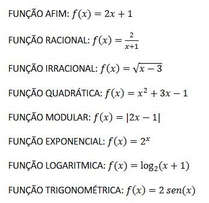

NOÇÃO DE FUNÇÃO E FUNÇÃO AFIM
Uma relação de dependência entre grandezas, é expresso pelos matemáticos por meio de fórmulas, nomeadas funções. Essa dependência ocorre quando uma grandeza depende da outra, como por exemplo: o acréscimo de comissão de vendas que depende de quantas vendas foram feitas.
Neste caso, temos a variável independente que é o valor de todas as vendas feitas, e a variável dependente, que depende do valor das vendas para saber quanta comissão irá receber.
Montando essa função terá a variável y, ou f(x), que será a variável dependente, que ira depender das vendas feitas. O valor das vendas será a variável independente, e o salário fixo, que não vai variar, para ser somada a conta. Assim tendo a seguinte função afim:
y = ax + b
salário = vendas * comissão + salário Fixo
OUTRAS FUNÇÕES
Além da função afim, já demostrada, temos outras funções como:

Alguns tipos de funções, disponibilizadas pela professora Dra. VALERIA ESPINDOLA LESSA, no material didático: MD3 - Funções e Função Afim, na página 6, disponível no SIGAA, para a turma de informática do primeiro ano, de 2023, do IFRS, Campus Erechim.